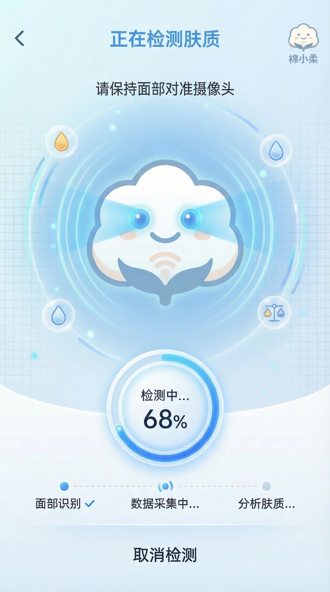
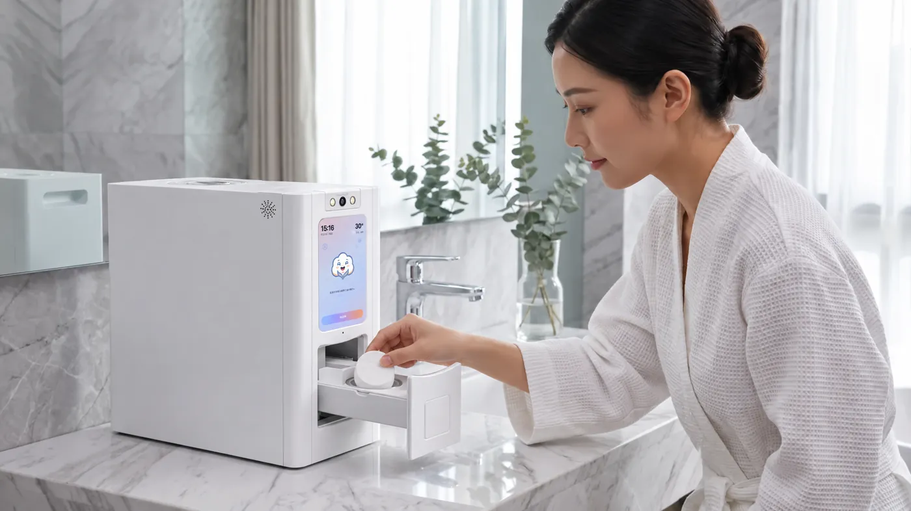

AI SKIN-SENSING TOWEL MACHINE
一处清晨 · 九幕护理旅程
- 09
- 幕连续镜头
- 01
- 处清晨梳妆台
- 01
- 方柔软毛巾
- 01
- 条滚动叙事线
02 — 靠近，识肤开始
肌肤的状态，
值得被认真对待。
镜头靠近屏幕，一道扫描光自上而下掠过。棉小柔把 AI 肤质识别放进用巾护理的起点，让选择不再只凭感觉。
屏幕播放的是项目提供的 UI 设计稿动效；数值与建议尚未作为经验证的产品承诺。

03 — 读懂状态
从识别开始，
把护理放回日常。
- 01开启识别界面进入检测状态
- 02查看呈现项目 UI 稿中的状态流转
- 03回到日常最终内容以获批版本为准
04 — 结构展开
让一台设备，
看得见它的层次。
外壳化作半透明，上盖、屏幕、摄像头与电路板沿各自方向轻轻离开原位，再回到完整的轮廓。
CAD 分件位移为网页视觉预演，不代表实机装配、轴心或动作。
X-RAY · MODEL STUDY05 — 遇水舒展
遇水舒展，
把柔软还给触感。
一枚压缩毛巾，在水的触碰下慢慢舒展。滚动页面，看它从紧实到蓬松。
06 — 送达 · 视觉预演
柔软的准备，
向手边靠近。
镜头下沉，机身正面下方的抽屉向前推出；外挡板、托盘与圆形托位/压缩毛巾饼随抽屉一同送到手边。
由项目模型临时向量驱动，实际行程与交互需工程确认。
07 — 回到日常
把贴心，放进
用巾的每一步。
回到同一处清晨梳妆台。智能设备不必抢走生活的主角，只让熟悉的护理，多一份从容。

08 — 触感
科技留在产品里，
柔软回到触感中。
镜头远去，晨光里的棉絮缓缓浮起。把技术藏进日常，让画面停在柔软、洁净与从容。
本章为视觉叙事，不新增面料成分、克重或功效类指标。